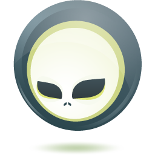

By John D. Ament6/6/2013
a maker of Enterprise Quality Management Systems in Hamilton, NJ
a suite of CDI extensions that make development easier than Spring
I lose so much time deploying my changes.
I lose so much time deploying my changes.
/